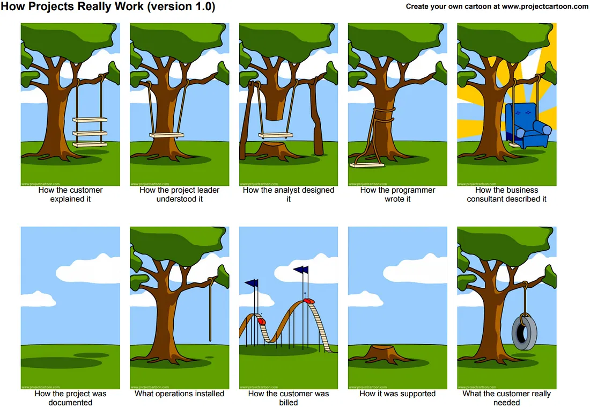

Module 1.1 Blog Post
Systems and System Engineering
Trouble managing your project's complexity?
Projects too complex for stakeholder understanding?
Documentation keeping your team out of sync?
Systems Engineering might be right for you!What's a system?
Before diving into Systems Engineering, let's build some context. First we need to understand what a system is.
What is a System?
First, let's build context as to what we mean by "system". Below is an academic definition of Systems Theory:
Systems theory "is a conceptual framework based on the principle that the component parts of a system can best be understood in the context of the relationships with each other and with other systems, rather than in isolation" (Wilkinson, 2011).
Albeit longwinded, this definition tells us that:
- A system is a framework--something we observe (weather system), or physical (an audio system). Different types will be discussed below.
- Systems theory focuses on a system's relationships with other systems. This implies there are lots of systems--each of which is referred to as a System Element.
Today the International Council on Systems Engineering (INCOSE) manages standardizations for Systems Engineering, with 70+ chapters worldwide. INCOSE defines Systems Engineering in relatively simplistic terms:
"The realization of successful systems" (2019)
Of course, this definition does not mean much without any context.
Holt and Perry expand on the definition, "a multi-disciplinary, common-sense approach that enables the realization of successful systems" (2019).
To better understand systems and system elements, let's use a grocery store as an example. In a grocery store, various departments such as the bakery, produce, and meat sections function as system elements within the larger grocery store system. Each of these departments can be considered a system element.
We can "zoom in" to break a system down into smaller system elements--like the various departments in a grocery store. We can also "zoom out" to understand the operations of the grocery store's business at a market, district, national, or global level.
Systems can come in different types. Peter Checkland's system classifications divide systems into five different types, and is one of the most widely used definition for systems (Holt, 2023). Below are examples of each type of system.
Checkland's Five System Types
- Natural Systems
- Systems beyond our control, such as the weather, time, and natural disasters.
- Designed Physical Systems
- The most common definition for a system--hardware. This can range from computers, tablets and phones to cars, planes, and satellites.
- Designed Abstract Systems
- Systems without a physical form used to explain ideas or concepts. This document's topic--Model Based System Engineering (MBSE)--is one example of a designed abstract system. Philosophical thought experiments and mathematical equations also fall under this classification.
- Human Activity Systems
- People-based systems, such as social groups, political systems, and services for people.
- Transcendental Systems
- Systems beyond human understanding--deities, black holes, and how AI works.
Systems can fall into multiple classifications. In our grocery store example, the store is both a designed physical system and an activity system. No matter what type a system is, they all have a common set of characteristics (Holt, 2023). The following list introduces each of these characteristics.
System Characteristics
- System Elements
- The parts that make up a system. In our grocery store example, the bakery, produce, and meat sections are all elements of the grocery store system.
- System Stakeholders
- The people who have an interest in the system. For a grocery store, stakeholders include customers, employees, and suppliers.
- System Attributes
- The properties or qualities of a system. A grocery store's attributes might include its size, location, and product variety.
- System Boundaries
- The limits that define what is inside and outside the system. The physical walls of our grocery store defines the physical boundaries of the grocery store's system.
- System Needs
- The requirements or demands that a system must satisfy. For our grocery store, needs includes providing fresh products, ensuring customer safety, and maintaining profitability.
- System Constraints
- The limitations or restrictions that affect the system. Our grocery store's constraints include budget, regulatory requirements, and physical space.
In systems theory, understanding these characteristics assists in analyzing and designing successful systems.
Systems Engineering
Systems Engineering is, simply put, the use of the systems above to design and manage complex systems throughout their existence, or life cycle. The more complex a system is, the more difficult it is to manage without an organized or structured approach.
Systems engineering provides structured processes and methodologies to manage complexity. This, in turn, enhances communication, enabling a shared understanding among stakeholders. With systems engineering principles, organizations can improve project outcomes, resulting in successful systems that meet stakeholder needs.
Identify the need for system engineering:
In the text Systems engineering demystified: A practitioner's handbook for developing complex systems using a model-based approach, there are "three evils" to be aware of in Systems Engineering: Complexity, Understanding, and Communication (Holt, 2021).
- Complexity
- Systems are becoming increasingly complex, making them difficult to manage without a structured approach.
- Understanding
- Different stakeholders may have different interpretations of the same system, leading to misunderstandings.
- Communication
- Effective communication is crucial for successful systems engineering, but it can be challenging due to the complexity and diverse perspectives of stakeholders.
Tree Swing Cartoon: Stakeholders "understand" the same project in different ways. In the cartoon below, each panel represents a radically different--albeit exaggerated--understanding of a "simple" tire swing.
The tree swing cartoon is one of my favorite examples of how misunderstandings can deny us of our success. It also shows just how complex systems can be, even something as simple as a tire swing.
Successful communication requires both the sender and receiver to understand the definitions and semantics of words used. Systems engineering oftentimes includes the use of domain-specific-language like SysML to prevent communication mishaps.
When multiple documents defining a single system, it is unlikely everyone is one the same page--literally and figuratively. With multiple "sources of truth" that are unlikely to all be up to date, out-of-sync teams can make some very costly mistakes.
examples:
- NASA's $125 Systems Engineering mistake: NASA and Lockheed Martin used different units of measurements (metric Newtons and English units, respectively) in navigation calculations for the Mars Climate Orbiter. This mistake costed NASA $125 million in September of 1999. (https://www.science.org/content/article/english-metric-miscue-doomed-mars-mission)
- A roller coaster's 1995 master plans were converted from English to Metric units in 2002. With multiple versions of the ride's plans, conversion errors were made, and the wrong size axel was ordered. Two years later, the roller coaster, derailing Tokyo Disneyland's Space Mountain roller coaster. (https://www.cnn.com/TECH/space/9909/30/mars.metric.02/), (https://spacemath.gsfc.nasa.gov/weekly/6Page53.pdf)
Different jobs, responsibilities, and backgrounds, and interests provide us with different insights and different viewpoints. In other words, context differs between people, creating (excellent) opportunities of communication breakdown. While this can create a superior product that one person alone cannot create, this can also create different understandings.
All of these different people are stakeholders, and generally fall into three categories:
- Customers
- People interacting with the system's end product--the main beneficiaries.
- Suppliers
- People that develop and deliver the system--manufacturer employees such as engineers.
- External
- People in roles that can influence the limits or restrict the system in some way--clients, auditors and investors.
Each of these stakeholders naturally have different understandings; that is to say, they have different contexts. The meaning of a statement, a problem or a need of a system might are interpreted differently, like the tree swing cartoon above.
Communication Breakdown
Communication breakdown can happen...
- person-to-person
- organization-to-organization
- system-to-system/inside a system
Systems engineering provides structured processes and methodologies to manage complexity, enhance communication, and ensure a shared understanding among stakeholders. By adopting systems engineering principles, organizations can improve project outcomes and deliver successful systems that meet stakeholder needs.
 By Phlsph7 - Own work, CC BY-SA 4.0, Link
By Phlsph7 - Own work, CC BY-SA 4.0, Link
One way to mitigate these communication breakdowns and handle the complexity of modern systems is to move away from document-based approaches and towards specific, rigorous models. Standardizations such as SysML and methodologies like MBSE provide frameworks to achieve this.
Model-Based Systems Engineering
Model-Based Systems Engineering (MBSE) is the formalized application of modeling to support system requirements, design, analysis, verification, and validation activities beginning in the conceptual design phase and continuing throughout development and later life cycle phases (INCOSE, 2019). Essentially, MBSE creates a "living" blueprint of the system that helps align all stakeholders.
Defining Modeling with MBSE
In MBSE, a "model" isn't just a 3D shape or a toy replica. Instead, it serves as a simplified abstraction of a system that represents reality for a specific purpose. These models act as a single source of truth, reducing the ambiguity found in written documents and ensuring that when one part of the system changes, the impact is immediately visible across the entire design.